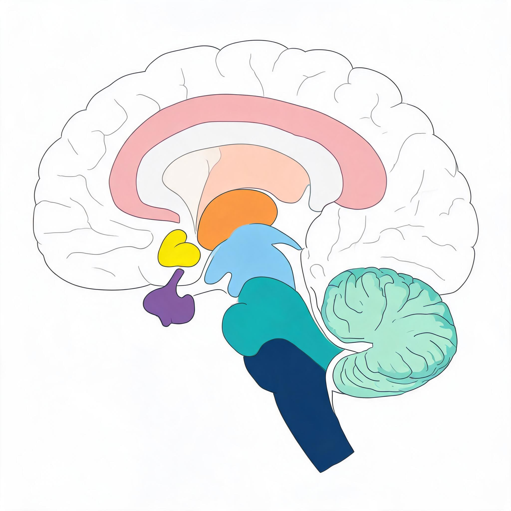
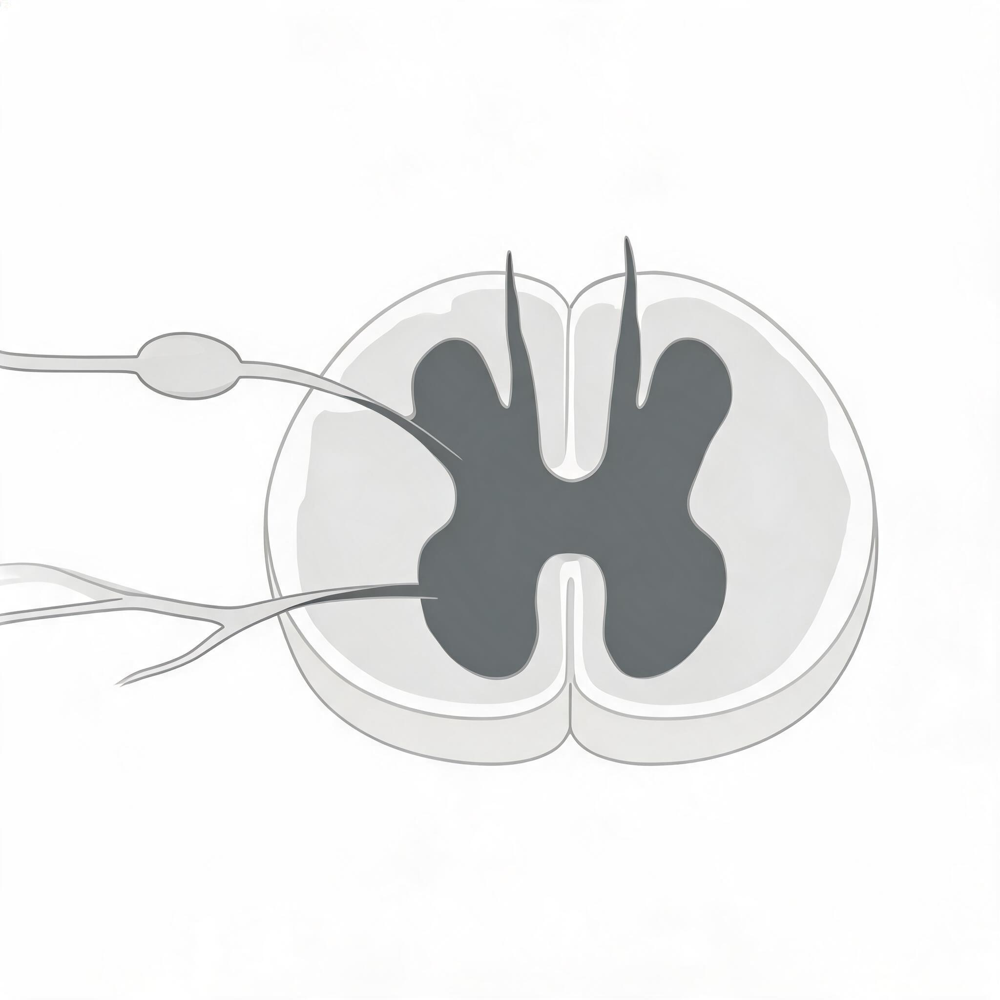
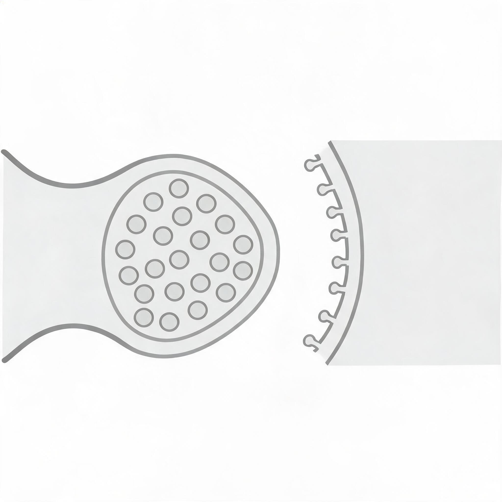

Instructions: This quiz contains 18 questions covering neurohistology, neuroanatomy, and clinical neurology. Answer each question to the best of your ability. For MCQs, select the single best answer. For short answer questions, write 3–5 sentences. Target time: 45–60 minutes.
Q1. The myelin sheath in the peripheral nervous system is produced by _____ cells, whereas in the central nervous system it is produced by _____.
Answer: Schwann (lemmocyte) | oligodendrocyte Also accept: lemmocyte / Schwann cell ; oligodendrocytes Bloom Level: Remember Topic: Neurohistology — Glial Cells and Myelin
Q2. In the developing neural tube, the _____ gene is secreted by the notochord and directs ventral patterning, while _____ and BMP genes direct dorsal patterning.
Answer: sonic hedgehog (Shh) | Wnt Also accept: Shh ; Wnt genes / Wnt and BMP Bloom Level: Remember Topic: Neuroanatomy — Development of the Nervous System
Q3. A patient has weakness in one arm accompanied by muscle wasting, loss of reflexes, and loss of tone in the affected muscles. Which type of cell damage most directly explains this presentation?
Answer: C Explanation: Weakness with muscle wasting, loss of reflexes, and loss of tone describes flaccid paralysis, which results from damage to lower motor neurons (alpha motor neurons in lamina 9 of the ventral horn). Option A describes upper motor neuron damage, which produces spastic paralysis with increased tone and hyperreflexia — the opposite of what is seen here. Option B refers to demyelination, which might cause weakness but not the characteristic wasting and loss of reflexes seen with motor neuron death. Option D (Purkinje cell damage) would cause incoordination and ataxia rather than flaccid paralysis with wasting. Bloom Level: Understand Topic: Neurology — Motor Signs / Neuroanatomy — Spinal Cord
Q4. Which of the following best describes a key difference between the dorsal column-medial lemniscus pathway and the spinothalamic tract?
Answer: C Explanation: The dorsal column-medial lemniscus pathway carries touch, deep pressure, proprioception, and vibration; its first-order neuron axons ascend ipsilaterally in the dorsal columns and only cross after synapsing in the gracile and cuneate nuclei of the hindbrain. In contrast, the spinothalamic tract (pain and temperature) crosses the midline in the anterior white commissure within a few segments of entry. Option A reverses the functions of the two pathways. Option B also reverses where the crossing occurs. Option D is incorrect because both pathways involve three neurons in their chains. Bloom Level: Understand Topic: Neuroanatomy — Sensory Systems
Q5. Why is the cerebellum described as having an ipsilateral rather than contralateral connection with the body?
Answer: D Explanation: The cerebellum has ipsilateral body connections because there are two decussations in its output pathway: the superior cerebellar peduncle crosses in the midbrain (decussation of the superior cerebellar peduncle), and then the corticospinal tract crosses again at the pyramidal decussation. These two crossings bring the cerebellum back to the same side of the body. Option A is misleading because it is not about “two crossings of cerebellar output” in the way described. Option B is incorrect because the middle cerebellar peduncle does not decussate within the cerebellum. Option C is incorrect because cerebellar efferents do cross to reach the contralateral thalamus. Bloom Level: Understand Topic: Neuroanatomy — Cerebellum
Q6. Which brain structure serves as the “24-hour clock” for circadian rhythms and receives direct input from the optic nerve?
Answer: B Explanation: The suprachiasmatic nucleus sits immediately above the optic chiasm and functions as the brain’s circadian clock; its neurons have an internal timing system adjusted by light intensity information from the optic nerves. Option A (VLPO) is the master sleep switch that inhibits arousal centers, not the circadian clock itself. Option C (LGN) is a thalamic relay for vision, not a circadian pacemaker. Option D (VMH) is involved in feeding and defensive behaviors, not circadian timing. Bloom Level: Understand Topic: Neuroanatomy — Hypothalamus
Q7. A 67-year-old patient suddenly develops weakness in the right arm and leg, increased muscle tone, and an extensor plantar response (Babinski sign) on the right side. CT confirms a left hemisphere stroke. Which structure is most likely affected?
Answer: B Explanation: The internal capsule contains the corticospinal tract; even relatively minor damage here can cause contralateral spastic paralysis with increased tone, weakness, and Babinski sign. The sudden onset and contralateral presentation are classic for an internal capsule stroke. Option A (cerebellar hemisphere) would cause ipsilateral incoordination and ataxia, not contralateral spastic paralysis. Option C (right ventral horn) would cause ipsilateral flaccid paralysis with wasting, not spasticity. Option D (substantia nigra) causes Parkinsonism (tremor, rigidity, bradykinesia), not acute spastic hemiparesis. Bloom Level: Apply Topic: Neurology — Stroke / Neuroanatomy — Motor Systems
Q8. A patient with Parkinson’s disease is asked to hold their hands outstretched. While at rest, the hands show a coarse, rhythmic tremor that decreases when the patient reaches for a cup. Which statement about this tremor is accurate?
Answer: B Explanation: The description of a tremor present at rest that decreases during voluntary movement is the classic resting tremor of Parkinson’s disease, caused by loss of dopaminergic neurons in the substantia nigra. Option A describes an action tremor, which is the opposite pattern (worsens with movement). Option C describes an intention (action) tremor, which is a sign of cerebellar damage and worsens as the hand approaches a target. Option D is incorrect because physiological tremor is fine, not coarse, and is not a pathological sign. Bloom Level: Apply Topic: Neurology — Motor Signs / Neuroanatomy — Basal Ganglia
Q9. Which of the following clinical findings would most likely result from damage to the right spinothalamic tract at the T6 spinal cord level?
Answer: B Explanation: The spinothalamic tract (lateral spinothalamic for pain and temperature) carries fibers that have crossed from the opposite side of the body. Therefore, damage to the right spinothalamic tract causes loss of pain and temperature sensation on the left side below the lesion. Option A describes dorsal column damage (ipsilateral touch/vibration). Option C also describes dorsal column damage (ipsilateral proprioception). Option D is incorrect because damage to a single spinal level affects sensation below that level, not just at that dermatome, and because the spinothalamic tract carries information from the contralateral side. Bloom Level: Apply Topic: Neuroanatomy — Sensory Systems / Neurology — Sensory Loss
Q10. A 6-year-old dog is having difficulty standing, knuckles over when walking, and drags its feet. The veterinarian suspects a progressive spinal cord disease. Histology shows degeneration of myelin sheaths in the spinal cord white matter, but axons are intact. Which cell type is primarily affected in this condition?
Answer: B Explanation: The case describes degenerative myelopathy — a demyelinating disease of the spinal cord. In the CNS, myelin is produced by oligodendrocytes, so their degeneration leads to the described myelin loss. Since axons are intact but myelin is lost, the problem is specifically demyelination. Option A (Schwann cells) myelinate peripheral nerves, not spinal cord white matter tracts. Option C (astrocytes) are involved in ion homeostasis and synapse modulation, not myelination. Option D (microglia) are immune effector cells and would respond to damage but are not the primary source of myelin. Bloom Level: Apply Topic: Neurohistology — Myelin / Neurology — Demyelination
Q11. A patient with multiple sclerosis experiences fatigue, intention tremor, and lack of coordination. Which pathophysiological mechanism best explains the tremor in this patient?
Answer: B Explanation: Multiple sclerosis causes focal demyelination in CNS white matter. When demyelination affects cerebellar connections (including spinocerebellar tracts, pontocerebellar fibers, or cerebellar output via the superior cerebellar peduncle), it produces intention tremor and ataxia because the cerebellum cannot properly coordinate movement timing. Option A describes Parkinson’s disease pathophysiology, not MS. Option C describes motor neuron disease (flaccid paralysis), not MS. Option D describes Alzheimer’s disease pathology, which affects the hippocampus and cortex, not the cerebellum, and does not cause tremor. Bloom Level: Analyze Topic: Neurology — Neurodegenerative Diseases / Neuroanatomy — Cerebellum
Q12. Which of the following statements accurately compares the roles of astrocytes and oligodendrocytes in the CNS?
Answer: B Explanation: Astrocytes are far more than passive structural support cells; they actively recycle neurotransmitters, secrete neurotrophic factors, modulate synapse number and function, and maintain extracellular potassium levels. Oligodendrocytes produce myelin sheaths and, critically, one oligodendrocyte can myelinate multiple axons in the CNS. Option A underestimates astrocyte function — this is a common misconception. Option C reverses the roles of the two cell types. Option D incorrectly describes both cell types; microglia, not astrocytes or oligodendrocytes, are the primary immune effector cells of the CNS. Bloom Level: Analyze Topic: Neurohistology — Glial Cells
Q13. In a transverse section through the rostral hindbrain, a student identifies a massive ventral bulge formed by crossing fibers and large nuclei. What is this structure, where do the crossing fibers terminate, and what is its functional significance?
Answer: B Explanation: The massive bulge on the ventral surface of the rostral hindbrain is formed by the basilar pontine nuclei and the crossing pontocerebellar fibers. The pontine nuclei receive input from the cerebral cortex via corticopontine fibers, and their axons cross the midline to form the middle cerebellar peduncle, carrying this information to the contralateral cerebellar hemisphere. Option A describes the inferior olive, which is smaller and more caudal, not the massive pontine bulge. Option C describes the pyramidal decussation, which is at the caudal end of the hindbrain, not rostral. Option D describes the medial lemniscus, which is a dorsal sensory tract, not a ventral bulge. Bloom Level: Analyze Topic: Neuroanatomy — Brain Stem / Precerebellar Nuclei
Q14. A 58-year-old patient presents with sudden-onset right-sided weakness, increased muscle tone, hyperreflexia, and a positive Babinski sign. Explain whether this is most consistent with upper or lower motor neuron damage, describe the key distinguishing features between these two types of paralysis, and identify the most likely anatomical location of the lesion.
Model Answer: This presentation is consistent with upper motor neuron (corticospinal tract) damage, classically termed spastic paralysis. Key distinguishing features: spastic paralysis shows increased muscle tone (spasticity), exaggerated reflexes (hyperreflexia), and positive Babinski sign (extension of the great toe upon plantar stimulation), with relatively little muscle wasting. In contrast, lower motor neuron damage causes flaccid paralysis with decreased or absent tone, loss of reflexes (areflexia), significant muscle atrophy, and fasciculations. The sudden onset and contralateral spastic hemiparesis suggest a lesion in the left internal capsule, which contains the corticospinal tract. The internal capsule is particularly vulnerable because it is a compact bundle of fibers; even small lesions (such as from a lacunar stroke or hemorrhage) can cause widespread contralateral motor deficits.
Key points required:
Bloom Level: Apply Topic: Neurology — Motor Signs / Neuroanatomy — Motor Systems
Q15. Explain why the cerebellum is not “just for balance,” using at least three specific functional roles of the cerebellum supported by the course material.
Model Answer: The cerebellum is often mistakenly thought to be only for balance, but it has multiple critical motor and cognitive functions. First, the cerebellum coordinates complex voluntary movements by comparing motor commands with actual body movements and making real-time adjustments — this is most important during the end stages of purposeful movements. Second, it manages posture and balance by receiving input from the vestibular system and making major postural adjustments. Third, in primates, the cerebellum is vital for coordinating hand and eye movements, including the fine coordination of skilled finger movements under binocular vision control, which enables tool manufacture. Fourth, the cerebellum contains granule cells that learn movement sequences throughout life — different folia code different movement patterns. Damage causes incoordination (ataxia), intention tremor, and dysmetria, not just balance problems.
Key points required:
Bloom Level: Analyze Topic: Neuroanatomy — Cerebellum
Q16. Compare and contrast the structural and functional organization of PNS myelinated axons versus CNS myelinated axons, including the cell types involved, the number of axons each cell type can myelinate, and the chemical composition differences.
Model Answer: In the PNS, myelinated axons are surrounded by myelin sheath, then Schwann cell (lemmocyte), then basal lamina, then endoneurium. Each Schwann cell myelinates only one segment of a single axon, and a chain of Schwann cells is needed along one axon. PNS myelin is richer in phospholipid and has less glycolipid than CNS myelin. Schwann cells are derived from the neural crest. In the CNS, oligodendrocytes produce myelin; a single oligodendrocyte can myelinate multiple axons simultaneously. CNS myelin has more glycolipid and less phospholipid than PNS myelin. CNS myelinated axons lack a basal lamina and endoneurium. Nodes of Ranvier occur at the junction between adjacent Schwann cells in the PNS and between adjacent oligodendrocyte processes in the CNS. Unlike PNS axons, CNS axons generally do not regenerate after injury, partly because CNS myelin contains proteins that inhibit axonal regeneration.
Key points required:
Bloom Level: Analyze Topic: Neurohistology — Myelin / Axons
Q17. A 45-year-old patient develops progressive weakness starting in the hands, with muscle wasting, fasciculations, and difficulty swallowing. The diagnosis is amyotrophic lateral sclerosis (ALS). Explain why ALS is considered both an upper and lower motor neuron disease, and describe how this differs from a pure lower motor neuron disease such as poliomyelitis.
Model Answer: ALS is called amyotrophic lateral sclerosis because it affects both lower motor neurons and upper motor neurons. “Amyotrophic” refers to muscle wasting caused by lower motor neuron degeneration in the spinal cord and brainstem ventral horns. “Lateral sclerosis” refers to the hardening (gliosis) of the lateral corticospinal tracts due to upper motor neuron degeneration. In ALS, both upper and lower motor neuron signs coexist: lower motor neuron signs include muscle wasting, fasciculations, and flaccid weakness; upper motor neuron signs include spasticity, hyperreflexia, and Babinski sign. In contrast, poliomyelitis is a pure lower motor neuron disease because the poliovirus travels retrogradely along motor axons to destroy motor neuron cell bodies in the spinal cord and brainstem, but it does not affect the corticospinal tract upper motor neurons. Therefore, polio causes pure flaccid paralysis without spasticity or upper motor neuron signs.
Key points required:
Bloom Level: Analyze Topic: Neurology — Neurodegenerative Diseases / Motor Signs
Q18. A medical student argues that “most neurological conditions only affect elderly people, and since I am young, I do not need to worry about them.” Evaluate this claim using evidence from at least three different neurological disorders discussed in the course material.
Model Answer: This claim is incorrect. First, multiple sclerosis is a relatively common cause of neurological disability that primarily affects young adults, with women affected up to three times more than men. Second, epilepsy can occur at any age and can be triggered by trauma, tumors, infections, or genetic factors — it is not limited to the elderly. Third, neural tube defects such as spina bifida occur during fetal development due to folate deficiency and cause paralysis at birth. Fourth, poliomyelitis primarily affects children and young adults, and was once a major cause of paralysis in young people worldwide. Fifth, Huntington’s disease typically appears between ages 35 and 50, which is middle age rather than elderly. Sixth, Duchenne muscular dystrophy begins between ages 1 and 5 and causes progressive paralysis in childhood. While some disorders like Alzheimer’s disease and Parkinson’s disease are more common in older adults, the claim that “most” neurological conditions affect only the elderly is a dangerous misconception that ignores the substantial burden of neurological disease across all age groups.
Key points required:
Bloom Level: Evaluate Topic: Neurology — Neurological Disorders (General)

Q19. In Diagram A, which structure serves as the major sensory relay station, receiving input from all senses except smell and projecting to the cerebral cortex?
Answer: B Explanation: The thalamus is the central relay station for sensory pathways (except olfaction). The hypothalamus controls survival functions and endocrine output. The midbrain is part of the brainstem containing the superior and inferior colliculi. The cerebellum coordinates movement and balance. Bloom Level: Understand Topic: Neuroanatomy — Diencephalon

Q20. In Diagram B, motor neurons that directly innervate skeletal muscles are located in which region?
Answer: C Explanation: Alpha motor neurons are located in lamina 9 of the ventral horn. The dorsal horn (A) receives sensory input. The dorsal root ganglion (B) contains sensory neuron cell bodies outside the spinal cord. The lateral funiculus (D) is a white matter column, not grey matter. Bloom Level: Understand Topic: Neuroanatomy — Spinal Cord

Q21. In Diagram C, the membrane-bound sacs containing neurotransmitter molecules in the presynaptic terminal are called:
Answer: B Explanation: Synaptic vesicles store and release neurotransmitters into the synaptic cleft. Nissl bodies (A) are RER clusters in the neuronal soma. Dendritic spines (C) are protrusions on dendrites for synaptic contact. Postsynaptic thickenings (D) are dense specializations on the postsynaptic membrane. Bloom Level: Remember Topic: Neurohistology — Synapse
Q22. A 55-year-old patient presents with a resting tremor, rigidity, and difficulty initiating movements. Deep brain stimulation of which structure can alleviate these symptoms?
Answer: B Explanation: The subthalamic nucleus is a key target for deep brain stimulation in Parkinson's disease. It is part of the basal ganglia indirect pathway and its inhibition helps restore motor function. The ventrolateral thalamus (A) receives cerebellar and pallidal input but is not the primary DBS target. The inferior olive (C) provides climbing fibers to the cerebellum. The red nucleus (D) gives rise to the rubrospinal tract. Bloom Level: Apply Topic: Neurology — Parkinson's Disease / Neuroanatomy — Basal Ganglia
Q23. Which of the following correctly lists the meningeal layers from outermost to innermost?
Answer: B Explanation: The three meningeal layers from outside to inside are: Dura mater (tough outer layer), Arachnoid mater (middle, web-like), and Pia mater (inner, adherent to brain surface). The epidural space is between skull and dura; the subarachnoid space (between arachnoid and pia) contains CSF. Bloom Level: Remember Topic: Neuroanatomy — Meninges / Blood Supply & CSF
Q24. Neural crest cells migrate from the dorsal neural tube and give rise to all of the following EXCEPT:
Answer: D Explanation: Oligodendrocytes are derived from the neural tube (CNS), NOT from the neural crest. Neural crest gives rise to PNS components (dorsal root ganglia, Schwann cells, satellite cells), melanocytes, and facial bones/muscles. This is a classic distinction: CNS glia (oligodendrocytes, astrocytes, microglia, ependyma) come from the neural tube; PNS glia (Schwann cells, satellite cells) come from the neural crest. Bloom Level: Analyze Topic: Neuroanatomy — Development / Neural Crest Derivatives
| Q# | Answer | Topic | Bloom Level |
|---|---|---|---|
| 1 | Schwann (lemmocyte) / oligodendrocyte | Neurohistology — Glial Cells and Myelin | Remember |
| 2 | sonic hedgehog (Shh) / Wnt | Neuroanatomy — Development | Remember |
| 3 | C | Neurology — Motor Signs / Spinal Cord | Understand |
| 4 | C | Neuroanatomy — Sensory Systems | Understand |
| 5 | D | Neuroanatomy — Cerebellum | Understand |
| 6 | B | Neuroanatomy — Hypothalamus | Understand |
| 7 | B | Neurology — Stroke / Motor Systems | Apply |
| 8 | B | Neurology — Motor Signs / Basal Ganglia | Apply |
| 9 | B | Neuroanatomy — Sensory Systems / Sensory Loss | Apply |
| 10 | B | Neurohistology — Myelin / Demyelination | Apply |
| 11 | B | Neurology — MS / Cerebellum | Analyze |
| 12 | B | Neurohistology — Glial Cells | Analyze |
| 13 | B | Neuroanatomy — Brain Stem / Precerebellar Nuclei | Analyze |
| 14 | See model answer | Neurology — Motor Signs / Motor Systems | Apply |
| 15 | See model answer | Neuroanatomy — Cerebellum | Analyze |
| 16 | See model answer | Neurohistology — Myelin / Axons | Analyze |
| 17 | See model answer | Neurology — ALS / Motor Signs | Analyze |
| 18 | See model answer | Neurology — Neurological Disorders | Evaluate |
| 19 | B | Neuroanatomy — Diencephalon | Understand |
| 20 | C | Neuroanatomy — Spinal Cord | Understand |
| 21 | B | Neurohistology — Synapse | Remember |
| 22 | B | Neurology — Parkinson's Disease | Apply |
| 23 | B | Neuroanatomy — Meninges / CSF | Remember |
| 24 | D | Neuroanatomy — Development / Neural Crest | Analyze |
After taking this quiz, review the following topics if you answered incorrectly:
Upper vs. lower motor neuron signs: Make sure you can distinguish spastic paralysis (increased tone, hyperreflexia, Babinski, no wasting) from flaccid paralysis (decreased tone, loss of reflexes, muscle wasting). This is one of the most clinically important distinctions in neurology.
Spinal cord sensory pathways: Focus on where fibers cross for the dorsal column pathway (hindbrain) versus the spinothalamic tract (spinal cord), and what sensations each carries. Drawing the pathways helps.
Cerebellar connections and symptoms: The cerebellum is ipsilateral (not contralateral) due to double decussation. Classic cerebellar damage causes intention tremor, ataxia, and dysmetria — not just balance problems.
Glial cell functions: Astrocytes are active metabolic and synaptic regulators, not just “support cells.” Oligodendrocytes myelinate multiple CNS axons; Schwann cells myelinate one PNS axon segment.
Brain stem cross-sectional anatomy: Be able to identify the pontine nuclei, inferior olive, and cerebellar peduncles and know which precerebellar nucleus projects via which peduncle.
Tremor types: Resting tremor (Parkinson’s) decreases with movement; action/intention tremor (cerebellar) increases with movement. Do not confuse these.
Demyelination diseases: Know the difference between CNS demyelination (MS, oligodendrocytes) and PNS demyelination (peripheral neuropathy, Schwann cells), and why CNS axons fail to regenerate.
Neurological conditions across age groups: Do not assume neurological disease only affects the elderly. MS, epilepsy, NTDs, polio, and Huntington’s all affect younger populations.
Visual identification: Be able to identify major brain regions (thalamus, hypothalamus, brainstem, cerebellum) on a sagittal section, spinal cord grey/white matter regions, and synaptic structures. These are common exam diagram questions.
Meninges and CSF: Know the three meningeal layers in order (dura → arachnoid → pia) and the spaces between them. CSF is produced by the choroid plexus in the ventricles.
Neural crest derivatives: Neural crest → PNS components (DRG, Schwann cells), melanocytes, facial bones. CNS glia (oligodendrocytes, astrocytes) come from the NEURAL TUBE — a classic exam distinction.
Deep brain stimulation targets: Parkinson’s DBS targets include the subthalamic nucleus and zona incerta. Know the underlying basal ganglia circuitry (direct/indirect pathways).